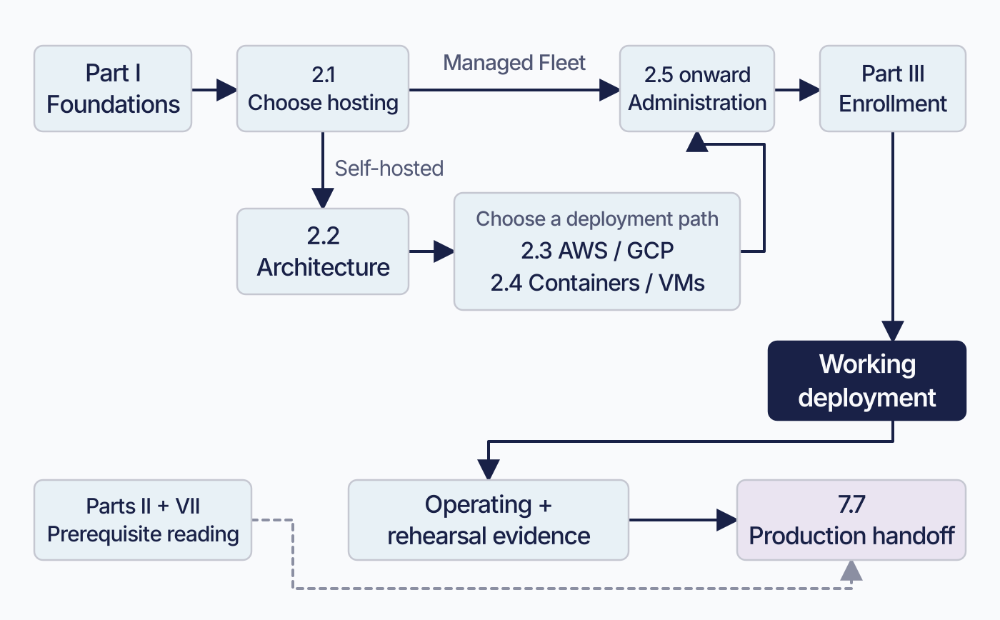
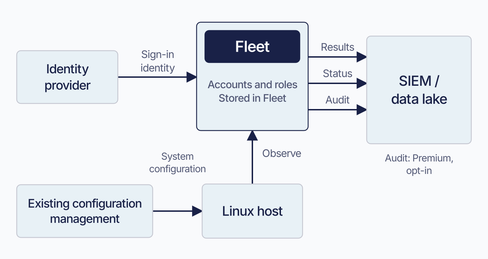
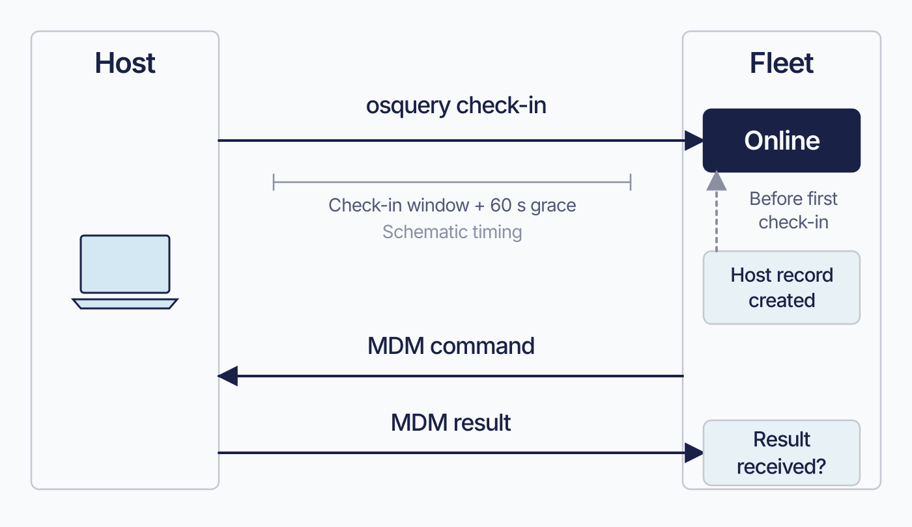
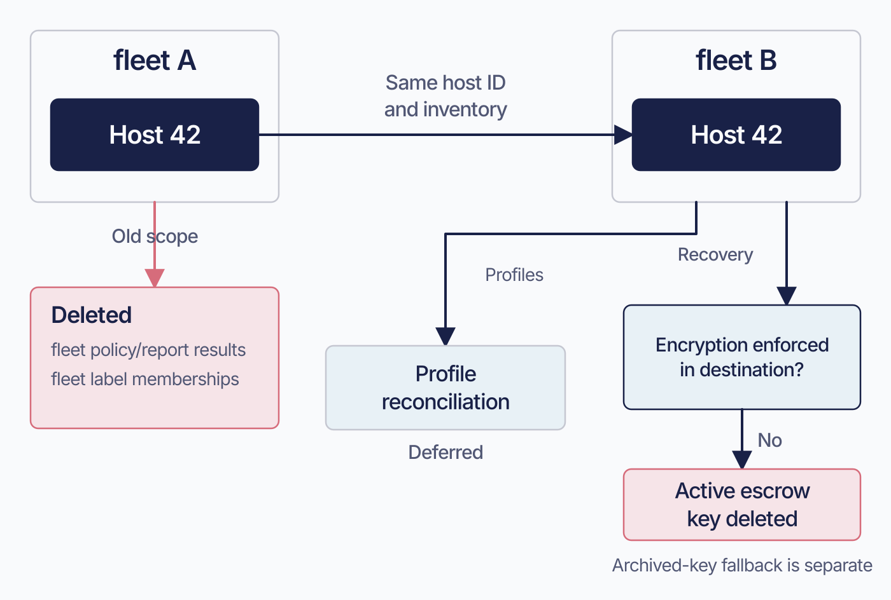
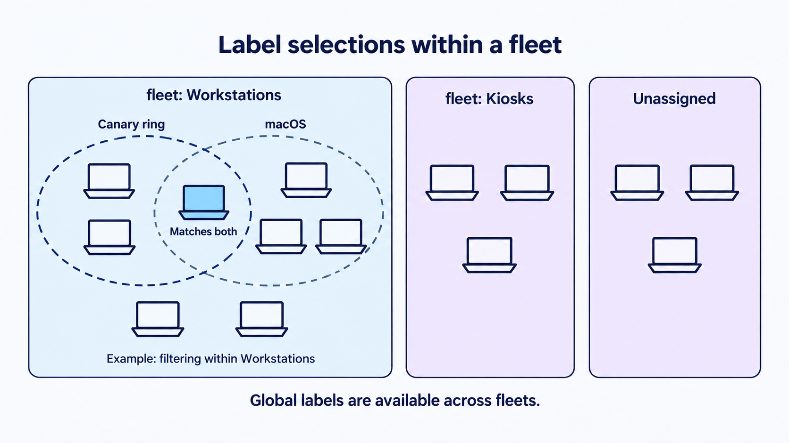
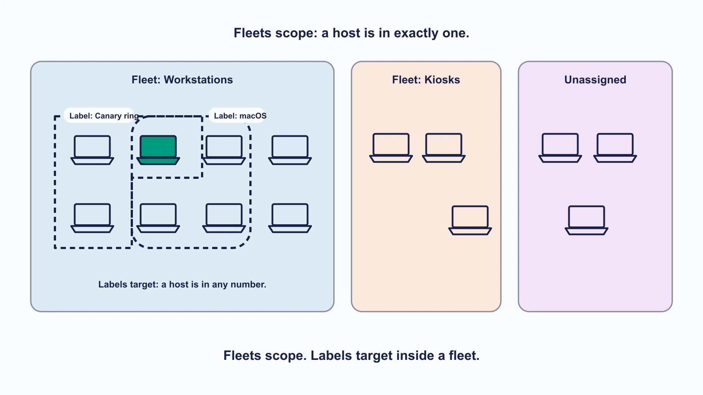
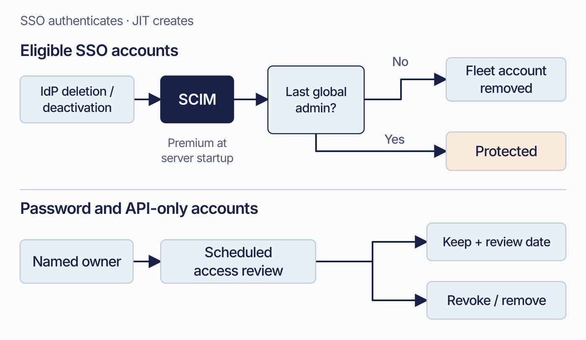
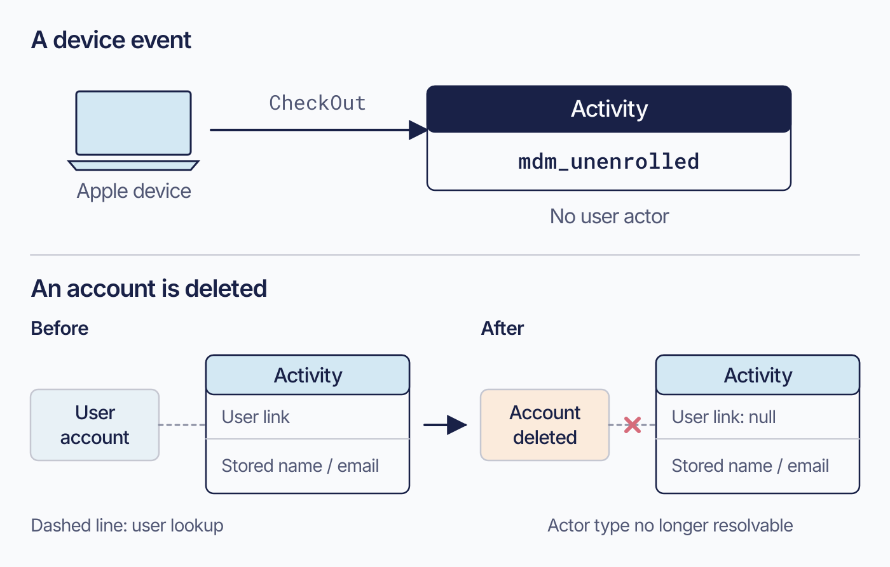
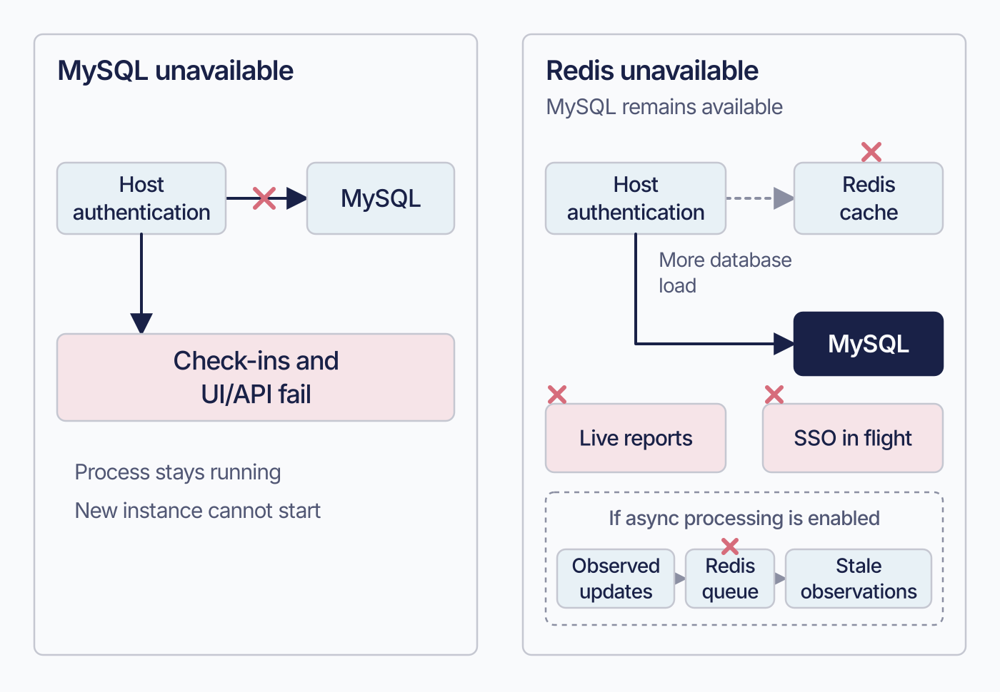

All nine figures installed in chapters 0.1, 0.2, and 1.1–1.6 on 2026-09-09.
The Missing Fleet Manual · 08 September 2026
Part 0–1: visual review
9 of 9 figures are installed in both editions; 0 await installation. See installation progress.
Nine candidates: eight additions and one replacement. Read them at the default book width first. The published chapters include these figures and their accompanying editorial revisions.
Fleet is the company, product, or server. Host groups are lowercase fleet/fleets. Review clarity, visual balance, and consistency; the labels replacement is the main consistency question.
Default: 720 px

Keeps managed and self-hosted reading paths distinct. Production handoff also needs operating and rehearsal evidence. After acceptance, shorten the deployment reading-path bullets.0.2 · New visual · Installed · 4.91 and 4.90
A pause before the release ledger
Can the release ledger have a quiet visual opening without inventing a feature story?
A shallow Cloud City vignette, using the existing introduction hero as a style reference. Atmosphere only: retain the release table in full.1.1 · New visual · Installed · 4.91 and 4.90
Where Fleet fits
Where does Fleet fit among the systems an organization already runs?

Places identity, Linux configuration management, and exported data around Fleet. Could replace much of the boundary walkthrough while keeping the conditions in accessible prose.
Separates the osquery Online signal from MDM command results. Keep the exact status conditions in prose; shorten repeated explanations of the channel distinction.1.3 · New visual · Installed · 4.91 and 4.90
Moving a host between fleets
What survives a fleet transfer, and what must be checked beforehand?

Shows retained host identity, deleted scope state, deferred profiles, and conditional recovery-key deletion. Keep the archived-key qualification in prose.1.3 · Replacement · Installed · 4.91 and 4.90
Overlapping labels within a fleet
How do overlapping label selections work within a fleet?

Installed replacement. Canary ring encloses three hosts, macOS four, with one shared host; two Workstations hosts match neither. All group names use lowercase fleet. The generated text and panel finish still differ slightly from the editable diagrams; the editable diagrams remain the reference for future refinements.Compare with the previous book image
Previous image — shown for comparison

1.4 · New visual · Installed · 4.91 and 4.90
Two account lifecycles
Which accounts need an explicit owner-led retirement process?

Separates eligible SCIM removal from reviews of password and API-only accounts, preserving the last-global-admin exception. Keep the role matrix and startup requirement.
Contrasts a device event with account deletion. Stored name and email survive even when the user reference cannot be resolved. Could shorten the two-case explanation.
Contrasts MySQL failure with Redis fallback and separate feature failures. The async queue path is explicitly conditional. Keep recovery commands and precise failure conditions in prose.